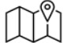
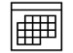

<mat-toolbar class="bg-white">
  
  <span class="example-spacer"></span>
  <div class="p-1 bg-light rounded rounded-pill shadow-sm search-bar" style="width: 500px; margin-inline-start: 10em;">
    <div class="input-group">
      <input type="search" placeholder="" aria-describedby="button-addon1" class="form-control border-0 bg-light"
        style="height: 30px;">
      <div class="input-group-append">
        <button id="button-addon1" type="submit"
          class="btn btn-link text-primary rounded-circle button-color d-flex justify-content-center align-items-center"
          style="width: 30px;">
          <i class="fa fa-search text-white" style="font-size: 13px;"></i>
        </button>
      </div>
    </div>
  </div>
  <div style="margin-left: 18em;">
    <i class="fa fa-bell"></i>
  </div>
  <div class="ms-5">
    <i class="fa fa-question-circle"></i>
  </div>
  <div class="ms-5">
    <i class="fa fa-user"></i>
  </div>
</mat-toolbar>


<mat-sidenav-container autosize="true">
  <mat-sidenav [ngClass]="!isCollapsed ? 'expanded' : ''" [mode]="isMobile ? 'over' : 'side'"
    [opened]="isMobile ? 'false' : 'true'">
    <mat-nav-list>
      <a mat-list-item class="ms-2">
        <button class="back-button" routerLink="/../superadmin">
          <i class="fas fa-arrow-left"></i>
        </button>
      </a>

      <a mat-list-item (click)="expandNavBar()">
        <span class="entry">
          <mat-icon>menu</mat-icon>
          <span *ngIf="!isCollapsed"> </span>
        </span>
      </a>
      <a mat-list-item routerLink="./">
        <span class="entry">
          
          <!-- <mat-icon>dashboard</mat-icon> -->
          <span *ngIf="!isCollapsed">Dashboard</span>
        </span>
      </a>
      <a mat-list-item>
        <span class="entry">
          

          <span *ngIf="!isCollapsed">EX Journey Mapping</span>
        </span>
      </a>

      <a mat-list-item>
        <span class="entry">
          
          <span *ngIf="!isCollapsed">Communication EX</span>
        </span>
      </a>
      <a mat-list-item>
        <span class="entry">
          
          <span *ngIf="!isCollapsed">People Matrics</span>
        </span>
      </a>
      <a mat-list-item routerLink="./survey/">
        <span class="entry">
          
          <span *ngIf="!isCollapsed">Survey</span>
        </span>
      </a>
      <a mat-list-item routerLink="./meetings/interview">
        <span class="entry">
          
          <span *ngIf="!isCollapsed">schedulling</span>
        </span>
      </a>
      <a mat-list-item routerLink="./project-admin">
        <span class="entry">
          
          <span *ngIf="!isCollapsed">Project admin</span>
        </span>
      </a>

    </mat-nav-list>
  </mat-sidenav>
  <mat-sidenav-content class="bg-white">
    <router-outlet></router-outlet>
  </mat-sidenav-content>
</mat-sidenav-container>